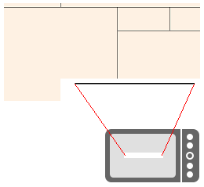

Hilfe für den ESR Scanner
ESR Scanner nutzt die Kamera an deinem Phone um die Kodierzeile von orangen Einzahlungsscheinen einzuscannen. Daraus kann man anschliessend einen Zahlungsauftrag generieren.
